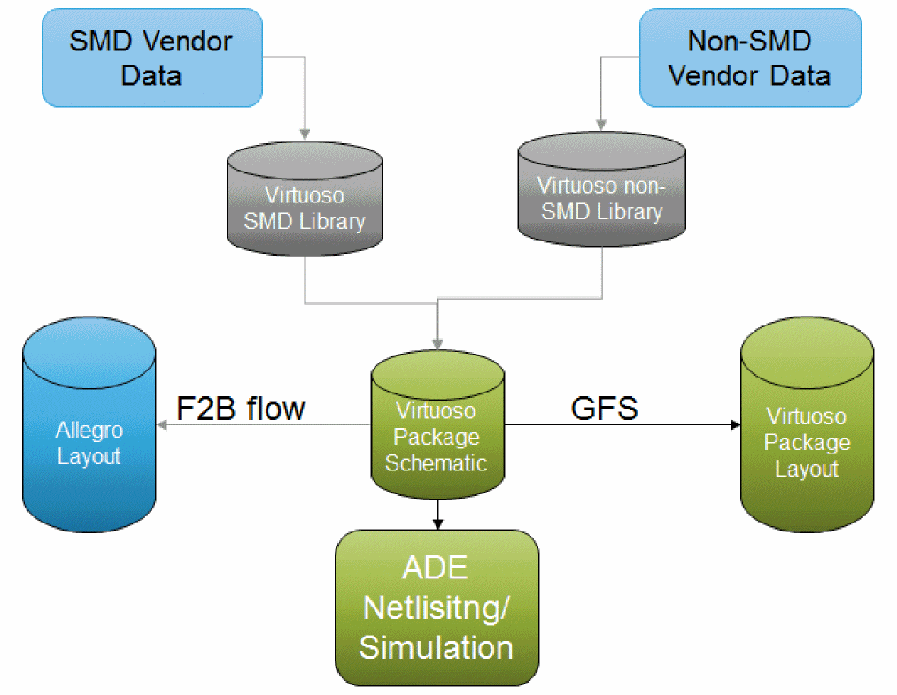
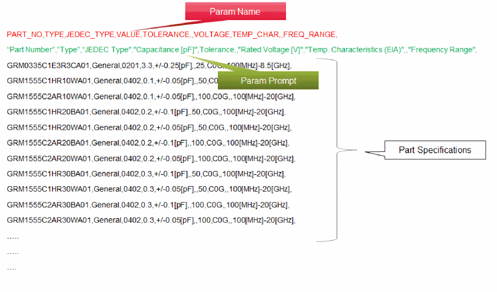

Library Import
The table below shows how different components can be imported into the Virtuoso RF Solution.
The following types of libraries can be imported:
|
Components available in Allegro as .dra files.
|
Use File – Import – From Allegro and set the Import Mode to DRA files.
|
|
SMD Components provided in a vendor library, such as Murata
|
These libraries are special Pcell/TILP components, bound to package technology layers. SMD jedecLib is imported from Allegro. It contains the physical layout with the Top and Bottom as generic layers, which inherits the top-most and bottom-most layer defined in the package layer stack-up.
|
|
Die or IC
|
Use the Die Export feature to create an abstract and a symbol for the die that can be used in the package schematic and layout.
These components are available as TILP cells to allow generic shapes in the base cellview of the component to be mapped to the right layer depending on its orientation and whether it is connected to the top or bottom of the substrate. Die libraries are not limited to only one technology file. They can be reused for different types of packages and technology files.
|
|
Embedded components to be used in the package layout
|
Draw the shapes in the embedded component using Virtuoso and create a component that is usable in the package layout.
These libraries are special Pcell/TILP components that are bound to the technology layers in such a way that the EM structures/coils are routed with the package metal layers. Embedded components cannot be technology independent because they are embedded into the package substrate and are aware of the specific layer cross-section where they are placed.
|
|
Package connectors, such as BGA or LGA that are available as an Allegro file
|
Import the connector as a cellview using File – Import – From Allegro and set the Import Mode to Layout (.sip/.mcm/.brd). The form allows you to also create a symbol for the connector that can be used in a schematic.
|
To ease the transition from an Allegro-based flow to the Virtuoso RF Solution, File – Import – From Allegro is used to import a library of existing component footprints into a 5.X library.
To enable you to use the raw component data from vendors, such as simulation/packaging combinations and simulation models, it can be imported as libraries.

Surface Mounted Device (SMD) components are resistor, capacitor, and inductor. SMD data includes the following:
-
CSV File
-
Packaging/Physical Data Association
-
Simulation Data Association

-
Model Files
-
Spice (.ckt)
-
Sparam (.s2p)
When the SMDs are being translated, the CDF properties are generated from PTF. Once SMD components are imported into the schematic, they are translated as TILPs in the layout.
Related Topics
Create Technology File
Import Technology File
Update Technology File
Return to top